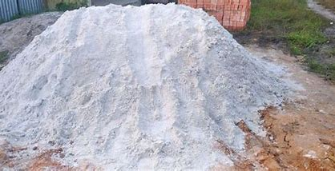
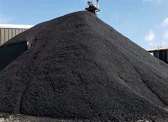

Types of Sand

White Sand
Often used for mortar,especially for bricklaying and pointing.

Black Sand
Used in construction industry for cement block manufacturing and as a dry motar mix.
Red Sand
Red sand is mixed with cement to create a mortar for bricklaying and pointing.

Pink Sand
Pink Silica Sand is used for smooth finish rendering and pointing aplication.